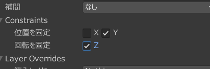
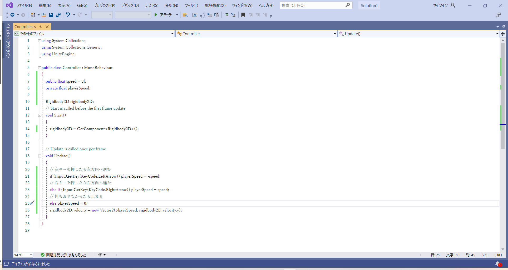
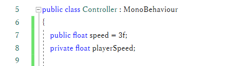
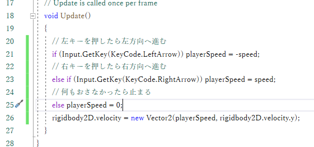

ここまで作ってて思いません？
自分で動かすものがないのに何がゲームだ、と。
ごもっともでございます。というわけで、プレイヤーが操作できるオブジェクトを作りましょう。
四角いGameObjectを作成してください。画像から持ってきてもいいし、白くていいならhierarcyから作ってもおっけーです。
名前はPlayerとかにしてあげましょう。
Add Componentから、RigidBody2DとSqeare Colliderもつけてあげてください。今回つかいます。
重力を0にするのもお忘れなく。
今回はこれに加えてもうちょっといじるところがあります。
inspectorのRigidBody2Dの中に、Constraintsって項目があるんじゃないでしょうか。そこを開くと、

こんなふうに三つチェックボックスがあります。
この画像とおなじようになるように、チェックを入れてあげてください。
こいつらはPlayerの動きを固定するやつです。今回はPlayerは縦に動く必要はなく、回る必要もありません。
なんならボールが当たった時に飛んで行ったりしてしまうとゲームが壊れちゃいます。
このようにチェックを入れれば、横方向だけにしか動けないようになります。
いつものようにScriptをつくってあげましょう。名前はPlayerControllerとかどうでしょう。
今回作るScriptは,左キーを押している間は左に、右キーを押している間は右に動かすっていうプログラムです。
今回は、右が押されてるか、もしくは左が押されてるかっていうのを、ゲーム中ずーっと確認してないといけません。
というわけで、Update関数に書いていきましょう。
いったん書いたやつを見せます。

ざっくり解説していきます。
まず上のこれは、移動速度を管理する変数です。

publicって書いてると思いますが、これ後でいいことがおこるので書いといてください。
Startの中身。こちらはRigidBody2Dをこのプログラムで使うよーみたいなやつと思っておいてください。
つづいてUpdateの中身。

ifって書いてありますね。これは分岐です。ifの後の()の中の条件を満たしてる時、{}の中に書いてある処理を実行します。
今回でいうと、上には(左キーが押されているとき)に{左向きにspeed分の力を加える}っていうのが、
下には(右キーが押されているとき)に{右向きにspeed分の力を加える}っていうのが入ってます。
Updateのおかげでずっと判定され続けるので、押してる間ずーっと動きます。
これが完成したら、Editorに戻って、Playerに今作ったScriptを入れて、再生して左右キーを押してみましょう。
左右矢印キーを押して動けば大成功です。
ボール動いてるのに矢印押しても動かないってときは、ゲームビューを一回クリックしてみてください。動くかもしれません。